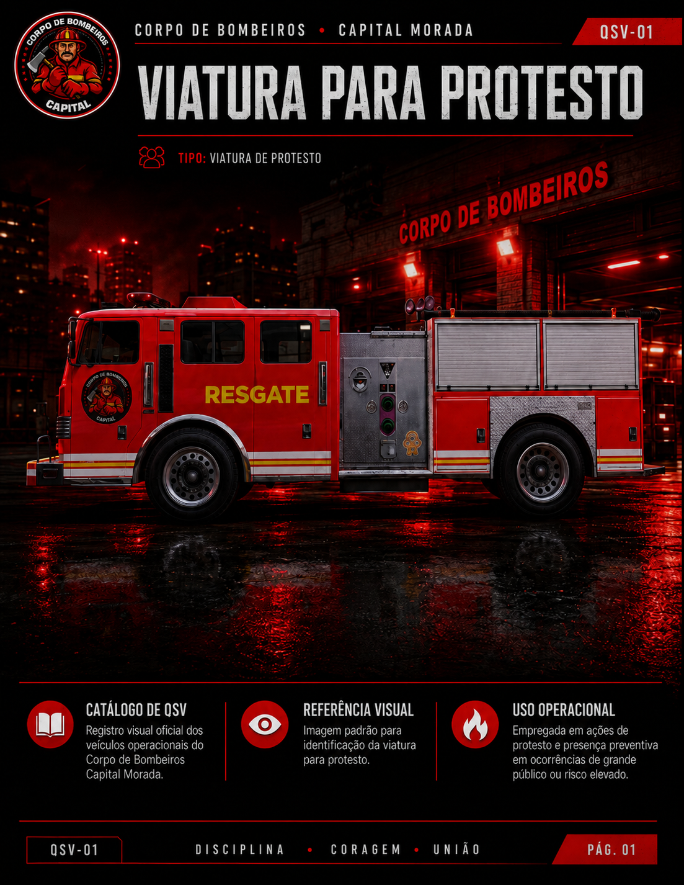
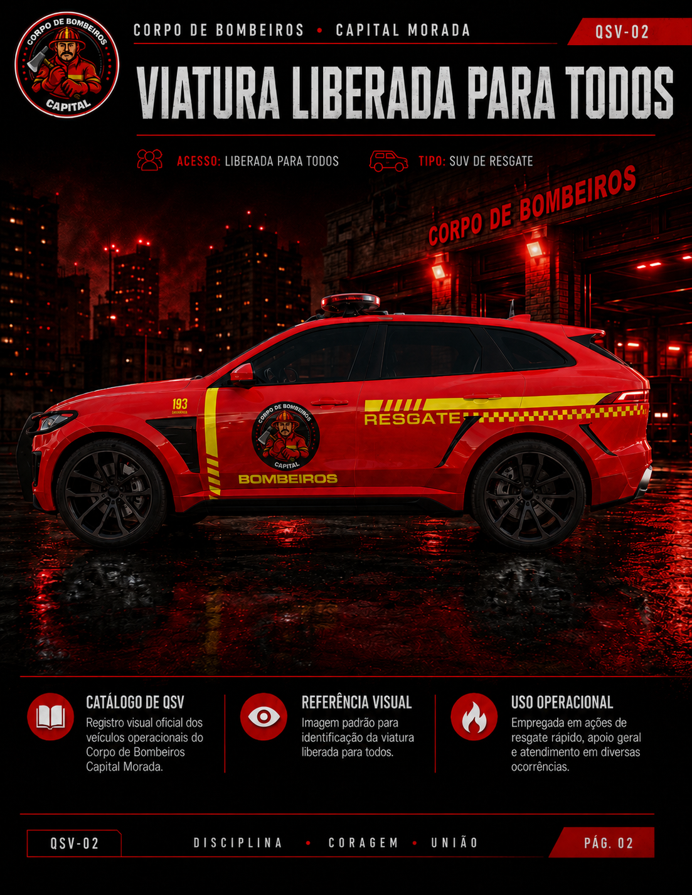
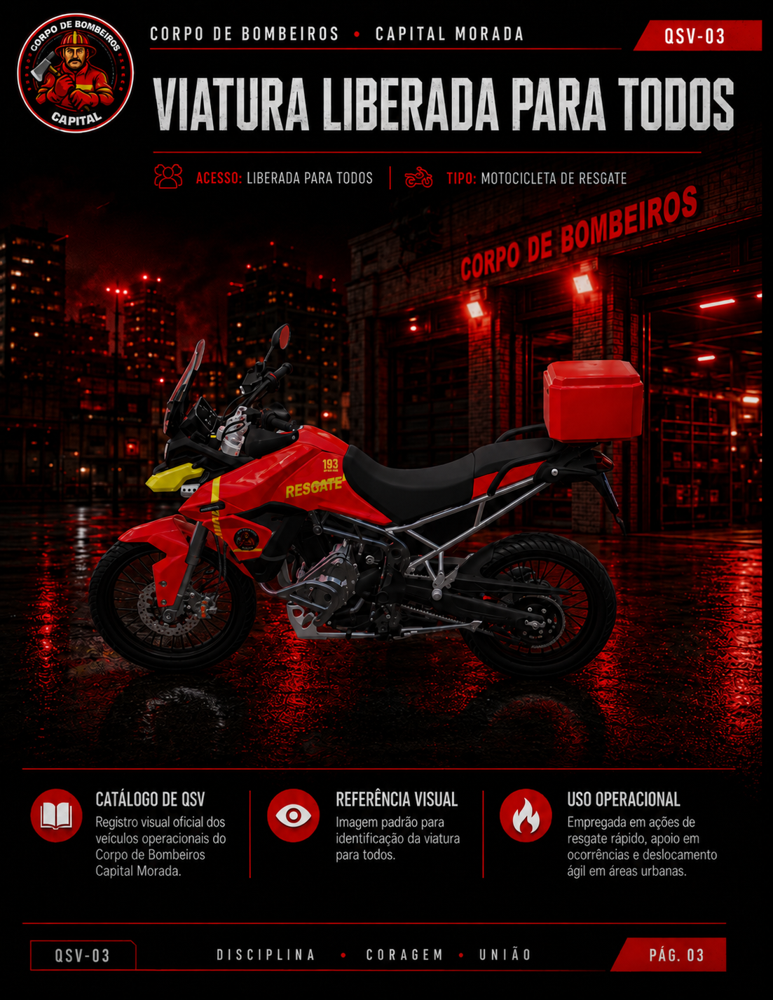
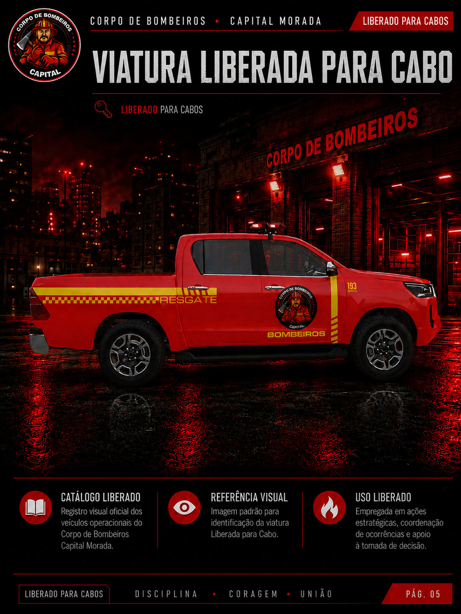

Apresentação
Apostila Geral de Modulação - Capital Morada
Objetivo da Apostila
Orientar os membros sobre como modular corretamente, como organizar informações pelo rádio, códigos a utilizar, e como reconhecer as principais viaturas. Guia prático atualizável.
O que é modulação?
Forma correta de se comunicar pelo rádio. Significa transmitir informações de maneira clara, objetiva, organizada e compreensível para todos na ocorrência.
Princípios Básicos
Clareza: Fale sem pressa e sem cortar palavras.
Objetividade: Transmita somente o necessário.
Organização: Identifique quem chama e quem recebe.
Respeito: Postura profissional na frequência.
Na prática, modular é informar:
1. Quem está falando
2. Para quem é a mensagem
3. Qual é a situação
4. Onde está acontecendo
5. Qual apoio é necessário
Códigos Q
Conjunto de abreviações para tornar a comunicação rápida e padronizada.


Códigos Mais Importantes
QAP
Está na escuta? Verifica se alguém está ouvindo.
"Bombeiro 01, QAP?"
QSL
Entendido / Mensagem recebida.
"QSL, em deslocamento."
QTH
Localização / Endereço.
"Informe seu QTH."
QTI
Rota / Deslocamento.
"Equipe em QTI sentido hospital."
QRR
Pedido de apoio / Reforço.
"Solicito QRR no QTH."
QSM
Repita a mensagem. Usado quando falha.
"QSM, transmissão cortada."
QRX
Aguarde. Momento antes de responder.
"QRX, verificando a vítima."
QTO / QTX / QRT
QTO: Deslocando/Saindo.
QTX: Manter acompanhamento.
QRT: Encerrar transmissão.
Alfabeto Fonético
Utilizado para soletrar nomes, placas, e endereços com precisão.

Tabela Fonética
Alfa
Bravo
Charlie
Delta
Echo
Fox
Golf
Hotel
Índia
Juliet
Kilo
Lima
Mike
November
Oscar
Papa
Quebec
Romeu
Sierra
Tango
Uniform
Victor
Whiskey
X-Ray
Yankee
Zulu
Numeração Fonética
Padroniza a transmissão dos números pelo rádio.

Tabela Numérica
Primeiro
Segundo
Terceiro
Quarto
Quinto
Sexto
Sétimo
Oitavo
Nono
Nulo / Negativo
Padrão de Comunicações CBM
Modelos visuais de comunicação para situações comuns de serviço.


Comunicação Voltada ao Bombeiro
Foco em assistência, orientação, cuidado e segurança da vítima. Diferente da policial, o contato inicial deve buscar acalmar e prestar apoio. Informe apenas dados necessários: local, tipo, vítimas, riscos, apoio.
Boas Práticas
Mantenha tom calmo; evite expor dados desnecessários; não grite; não discuta; confirme com QSL; peça QSM quando necessário.
Exemplo de Comunicação Correta
Narrador: Uma solicitação de chamada é aberta na rede. A Central aciona a unidade disponível para deslocamento até a última QRU informada.
Central: “QAP Subtenente RJ?”
Subtenente RJ: “QAP Central, Subtenente RJ na escuta. Indo na última QRU, QSL.”
Central: “QSL RJ. Desloque até a última QRU informada e, ao chegar na QTH, repasse a situação na rede.”
Subtenente RJ: “QSL Central. Subtenente RJ em QTI sentido à QRU.”
Narrador: O Subtenente RJ realiza o deslocamento até o local da ocorrência e, ao chegar na área, faz o primeiro informe para a Central.
Subtenente RJ: “QAP Central, Subtenente RJ já estou na QTH. Há muitos feridos no local, irei realizar o salvamento dos mesmos. QSL.”
Central: “QSL RJ. Qualquer informe, joga na rede. QSL.”
Subtenente RJ: “QSL Central.”
Narrador: Após o atendimento, salvamento e estabilização da área, o Subtenente RJ informa o encerramento da ocorrência.
Subtenente RJ: “QAP Central, código 4 na área. Subtenente RJ retornando à QTI da base. QSL.”
Central: “QSL RJ. TKS pelo informe.”
Narrador: Com o código 4 informado, a ocorrência é finalizada e a unidade retorna para a base em segurança.
Posições e Viaturas (QSV)
Funções na viatura e catálogo oficial.
P1 - Condutor
Responsável pela condução segura, rota, posicionamento da viatura e atenção ao trânsito.
P2 - Comunicação
Pode modular com a Central, repassar informações importantes e auxiliar na organização da ocorrência.
P3 - Apoio Operacional
Auxilia na sinalização, atendimento, equipamentos, segurança do local e demais funções.
QSV-01: Protesto

📖 CATÁLOGO DE QSVRegistro visual oficial dos veículos operacionais do Corpo de Bombeiros Capital Morada.
Imagem padrão para identificação da viatura para protesto.
Empregada em ações de protesto e presença preventiva em ocorrências de grande público ou risco elevado.
QSV-02: SUV de Resgate

📖 CATÁLOGO DE QSVRegistro visual oficial dos veículos operacionais do Corpo de Bombeiros Capital Morada.
Imagem padrão para identificação da viatura SUV de Resgate.
Viatura de resposta rápida, ágil e versátil, com capacidade para carregar equipamentos essenciais de Suporte Básico de Vida (SBV) e trauma.
QSV-03: Moto Resgate

📖 CATÁLOGO DE QSVRegistro visual oficial dos veículos operacionais do Corpo de Bombeiros Capital Morada.
Imagem padrão para identificação da viatura Moto Resgate.
Viatura de altíssima agilidade (batedor). Primeira resposta em locais de trânsito intenso, garantindo atendimento imediato até a chegada da viatura principal.
QSV-04: Pickup Resgate

📖 CATÁLOGO DE QSVRegistro visual oficial dos veículos operacionais do Corpo de Bombeiros Capital Morada.
Imagem padrão para identificação da viatura Pickup Resgate.
Viatura utilitária para transporte de pranchas longas, equipamentos pesados de desencarceramento e apoio logístico em terrenos irregulares.